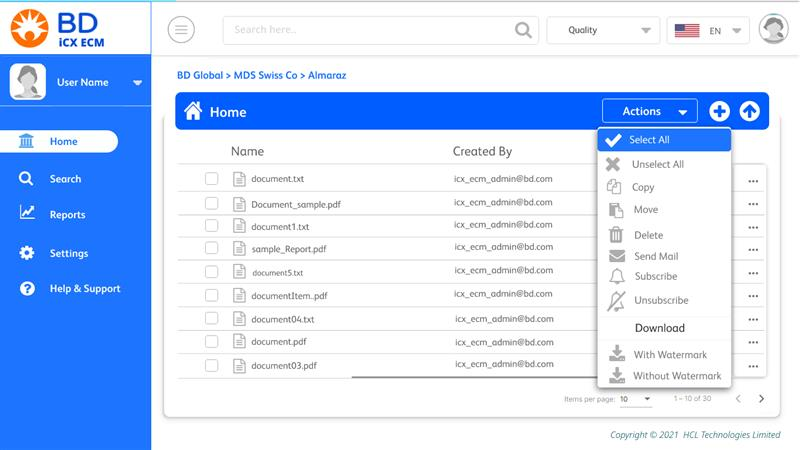
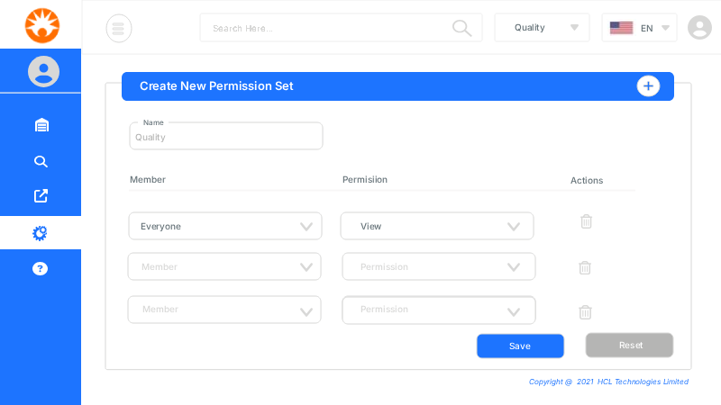

Becton Dickinson - Document Management Platform (UX Redesign Case Study)
Role: UI/UX Designer & Front End
Duration: 19 months
Type: Enterprise B2B – Healthcare / Document Management System
Team: Product Owner, Engineering Team, UI/UX Designers, QA
Tools: Figma, Adobe XD, Jira, Photopea, HTML/CSS
Project Overview
Becton Dickinson required a redesign of an internal document management platform used to store and manage critical documents in a structured and permission-based environment. The platform was already in active enterprise use across internal healthcare workflows. However, the experience needed a modern UX refresh to improve usability, clarity, and consistency while maintaining strict healthcare and enterprise constraints. The project focused on redesigning 10 core screens that covered the primary document workflows. This project required balancing usability improvements with strict enterprise and healthcare compliance standards, making clarity and error prevention the primary design drivers.
Problem Statement
The outdated interface reduced efficiency in document-heavy workflows and increased friction in permission-based operations.
Key challenges included:
- Complex folder structures that were hard to understand at a glance
- Limited visual differentiation between user actions and permissions
- Inconsistent use of colors, icons, typography, and branding
- High cognitive load when managing or locating documents
Understanding the Use Case
The platform followed a strict role-based access model to ensure document safety and compliance.
Edit Access Users
- Upload documents
- Edit metadata
- Delete or manage files
View-Only Users
- Browse folders
- View documents
- No modification privileges
Designing for both user types required clear permission visibility and error prevention to avoid accidental actions.
Design Scope
This was a full redesign, not an incremental update.
- Redesign of 10 key application screens
- Complete visual refresh
- Improved information hierarchy
- Clear permission-based interactions
The redesign aimed to create a scalable foundation for future product enhancements while reducing operational friction in document workflows.
Healthcare UX Constraints
Given the healthcare domain, the design followed strict usability and compliance principles:
- Accuracy and clarity prioritized over visual flair
- Minimal, non-decorative UI elements
- Clearly labeled and confirmed actions
- Predictable layouts to reduce user errors
- No ambiguity in critical actions like upload, edit, or delete
Accessibility Considerations
The redesigned experience accounted for accessibility best practices:
- Improved color contrast
- Clear typography hierarchy
- Readable font sizes
- Consistent spacing patterns
- Larger click targets for critical actions
- Clear feedback for success, warning, and error states
Design Decisions
- Simplified folder visualization for faster scanning
- Clear permission indicators at folder and file level
- Updated color palette aligned with enterprise branding
- Standardized icons for document actions
- Improved typography for readability
- Consistent placement of primary and secondary actions
Approved UI Screens (Client Sign-off)
The following screens were part of the redesigned experience and received stakeholder approval during implementation.

Permission-based Action Toolbar with Role Visibility

Role-Based Permission Configuration Interface
Complex Permission Flow (Recreated for Portfolio)
Due to confidentiality, detailed production flows cannot be shown. Below is a reconstructed version demonstrating the logic behind permission-based document management.

Components Designed
- Folder and file cards
- Permission indicators
- Action toolbars
- Upload and confirmation modals
- Alert and error states
- Table layouts for document lists
These components ensured visual and functional consistency across all 10 screens.
Usability Challenges
- Balancing simplicity with dense information
- Designing for multiple permission levels
- Preventing accidental destructive actions
- Maintaining consistency across redesigned screens
- Working within healthcare compliance constraints
Results & Impact
- Standardized permission-based logic across 10 core workflows
- Reduced workflow friction by simplifying folder hierarchy and action visibility
- Improved task efficiency through contextual action toolbars
- Enabled scalable component reuse for future product modules
- Strengthened enterprise readiness through accessibility-focused improvements
My Role & Ownership
- UX redesign of 10 core application screens
- Defined permission-based interaction logic for multi-role users
- Established visual system updates aligned with BD enterprise branding
- Collaborated with engineering to ensure accurate implementation
- Advocated accessibility improvements within healthcare constraints
- Presented design directions to stakeholders for approval